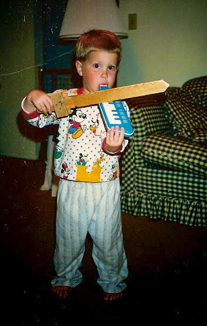
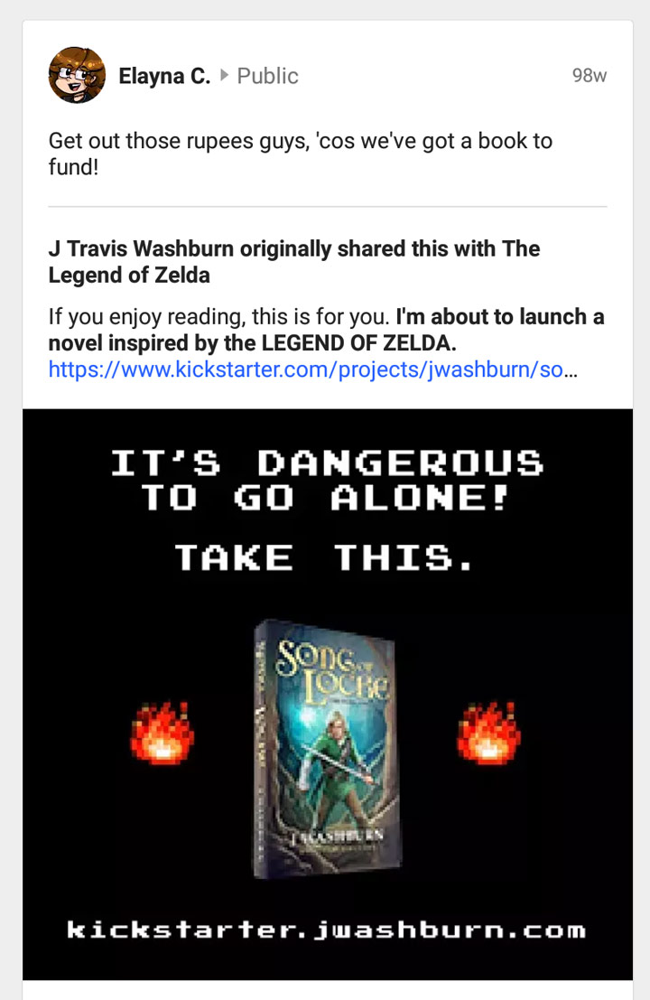
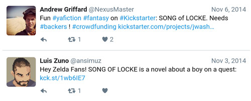
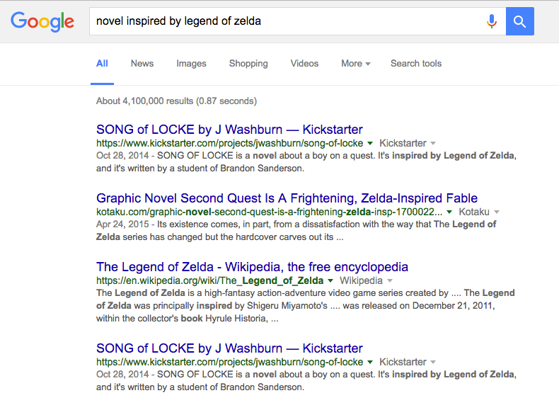
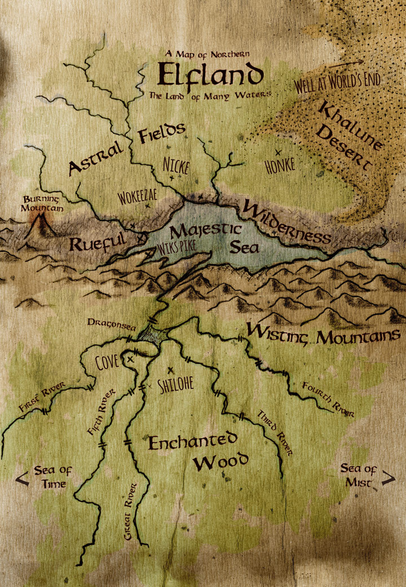
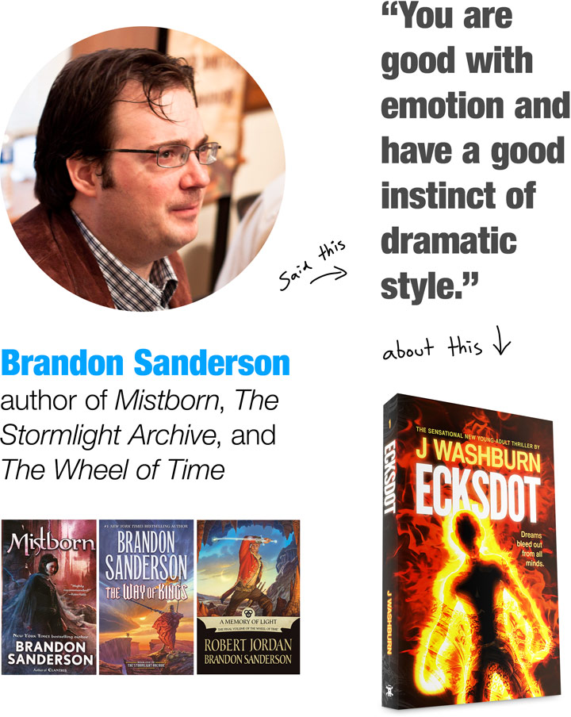
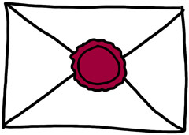
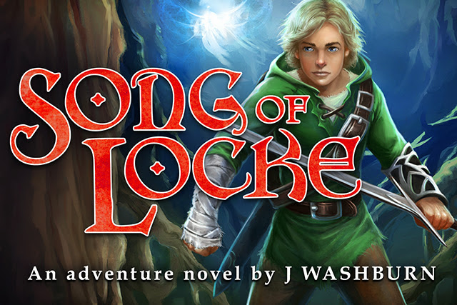

There are only two kinds of books:
Ones you can’t find time to read and
ones you can’t stop reading.
After I watched my friend’s older sister play the original Legend of Zelda, I stole some wood from our neighbor’s woodpile and hammered together a wooden sword.
I used it to slay imaginary dragons. Then I’d tuck it in the back of my shirt as I hung off the edge of the balcony with make-believe lava below.
My brother holds a magical flute and the sword I made when I was 5.
I couldn’t get enough of adventure stories.
This problem followed me into my adulthood: I wanted more LUKE SKYWALKER, more AVATAR AANG, more SAMWISE THE BRAVE.
You know what I’m talking about!
When it’s a book you love, you just can’t get enough.
At the end of 2014, I launched a Kickstarter. Hundreds of backers pledged thousands of dollars, enabling me to write and publish SONG OF LOCKE.
 I knew it had to have certain elements, and that meant following a familiar formula, the one that had inspired my childhood:
I’d seen these elements in many stories, including Legend of Zelda, Peter Pan, and Lord of the Rings. Not only were they parts of a successful pattern, but they were part of what I just couldn’t get enough of!
Unfortunately, I’d been disappointed by many books, movies, and games. Ones that talked the talk but didn’t walk the walk. And the last thing I wanted was a book full of tropes but without any heart, without any soul.
No, it’s not a cliche.
My favorites became favorites because they had depth. My book needed rich characters, a colorful magic system, and an unforgettable setting.
No, it doesn’t rip-off the classics.
My story would stand on the shoulders of those who’d gone before, drawing on their powers and then reaching to higher heights thanks to their help.
YES—it’s an unexpected addition to a long tradition!
My story needed deep emotional themes, ones that would resonate with modern readers, including things I had personally struggled with. It had to be real.
This wasn’t my first rodeo, but writing a book is always a ton of work. I buckled down, skipping parties, delaying work, and passing on vacations. Because I had to finish. I had to deliver what I’d promised.
I launched the paperback at the end of 2015.
“SONG OF LOCKE was literally one of the best fantasy books I have ever read. An I-hear-music- in-my-head-while-I- am-reading-it kind of book. It makes the vast majority of fantasy books I have read seem silly by comparison.”
— B. J. Riley
“I felt satisfied when I finished. The ending was my favorite. And I still think about the story days after reading.”
— Alice Budd
SONG OF LOCKE
Back Flap
Locke is an elfe who feels a strange, magical longing for something that he can’t quite describe.
His sylfe Picke, a fairy-like creature, dares him to follow a band of bloodthirsty warriors into the woods, promising they’ll lead to the thing Locke longs for.
Mustering his courage, Locke takes the dare, and the two of them find themselves on a wild adventure. Soon Locke must face snarling wolves, wield a magic blade, and risk his life to rescue a goddess—a girl he hardly knows but who he can’t stop thinking about—from the clutches of a fallen god.
In the spirit of Legend of Zelda and Peter Pan, SONG OF LOCKE takes place in a detailed and gritty fantasy world drenched in human emotion. The story has sword fights, witty banter, crushes, and even some subtle philosophy smuggled in. It’s an epic for everyone who loves good stories—for anyone who has longed for something that seemed forever out of reach.
The crazy thing is that this book wasn’t published by a behemoth and funded with corporate money. It happened thanks to the funding of people like you.
Real people.
I’m grateful for that little miracle.
It allowed me to become an indie (independent) author. That’s like being an indie band, where you don’t sign with big label. The only difference is that indie authors have more groupies.
This help from my awesome fans allowed me to create an artisan book—written, illustrated, and typeset by the author, a masterpiece handcrafted from beginning to end.
Yes, that includes the illustrations!
“The ending was especially well done. I felt satisfied, yet eager for more. This book was one of the most enjoyable novels I have ever read.”
— Steve A.
“Once I started it, I didn’t want to put it down.”
— B. Foster
“The characters were believably flawed (which is freaking great). One of my favorite parts was the exquisite descriptions of the difficulties of close friendship.”
— G. A. B.
I’m new in these parts.
You probably haven’t heard of me before today, but I promise it won’t be the last time.
My name’s J.
Nope, not J-A-Y. And not even J with a period. (Abbreviating my name actually makes it longer.) It starts and ends with J.
Before I wrote SONG OF LOCKE, I wrote a book called ECKSDOT.
They say it’s The Sandlot meets Inception.
Who’s “they”?
Well, they’re a lot of people. But one of them is this guy, who paid me a pretty awesome compliment:
“My personal favorite is the way he describes sounds visually. I’ve never read anything like that before. It took my breath away. I re-read those descriptions several times before moving on just for the pure beauty of it.”
— Nancy D.
“It’s basically LEGEND OF ZELDA meets GAME OF THRONES.”
— Nathan Tucker

“I had several late nights because I couldn’t stop reading. The imagery is beautiful, the characters are lovable, and the story is just plain fun. The interaction between Locke and Picke is always entertaining and made me both laugh and think deeply about life.”
— Dallin J.

“The writing style is quite fluid. The dynamic between Picke and Locke is entertaining. The opening was nostalgic for me, having played Ocarina of Time so often. Also, it’s divided into scrolls, which makes the story feel older, like it’s in another world, not just about another world.”
— Parker O.
Yep, I’m serious. I’ll give you this book for free.
But there’s a catch—I’ll only scratch your back if you scratch mine.
I’m willing to make a deal:
Step 1
Download Scrolls 1 + 2 free on Amazon.
Step 2
Write an honest review of Scrolls 1 + 2.
Step 3
Email me your review.
YOU WIN!
(I send you Scrolls 3 + 4.)

Then you’ll have all four parts of SONG OF LOCKE.
And I’ll have another review under my belt.
But there’s a catch. This offer’s only open for the next 7 days. So act fast!
[ 06 : 14 : 37 ]
Download Scrolls 1 + 2 FREE right now.
